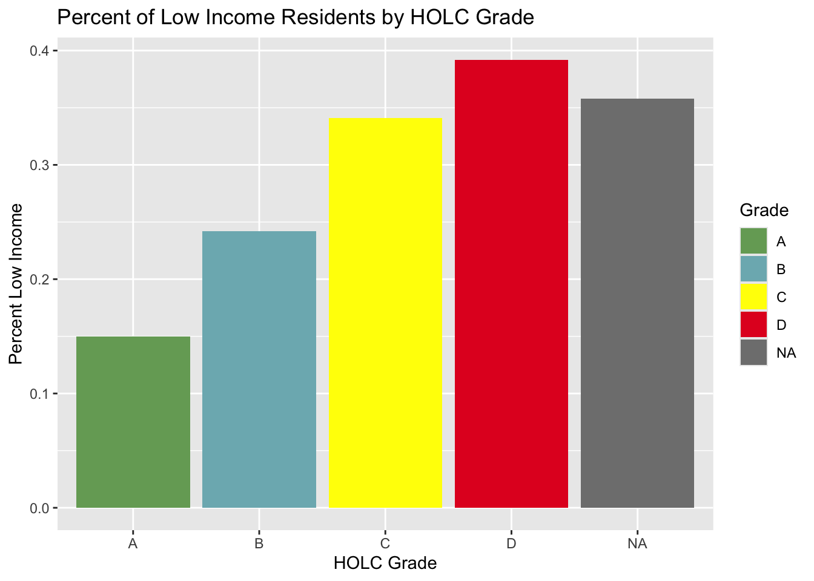
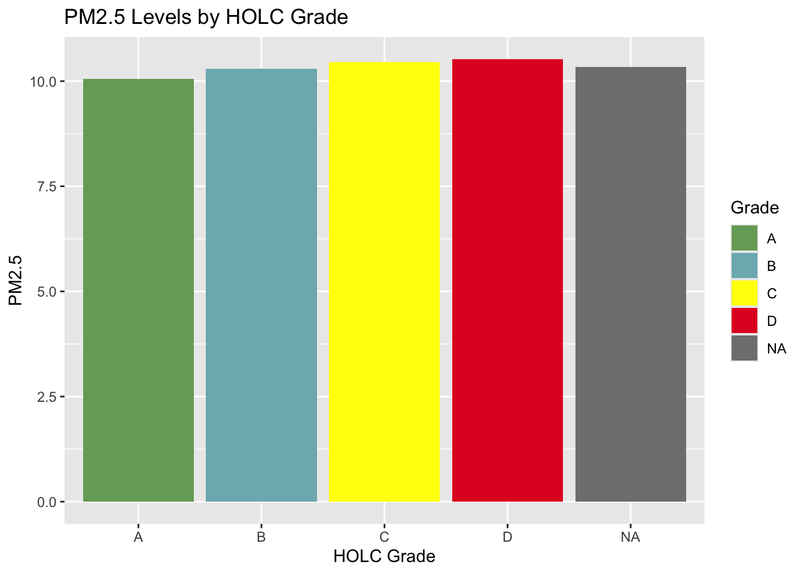
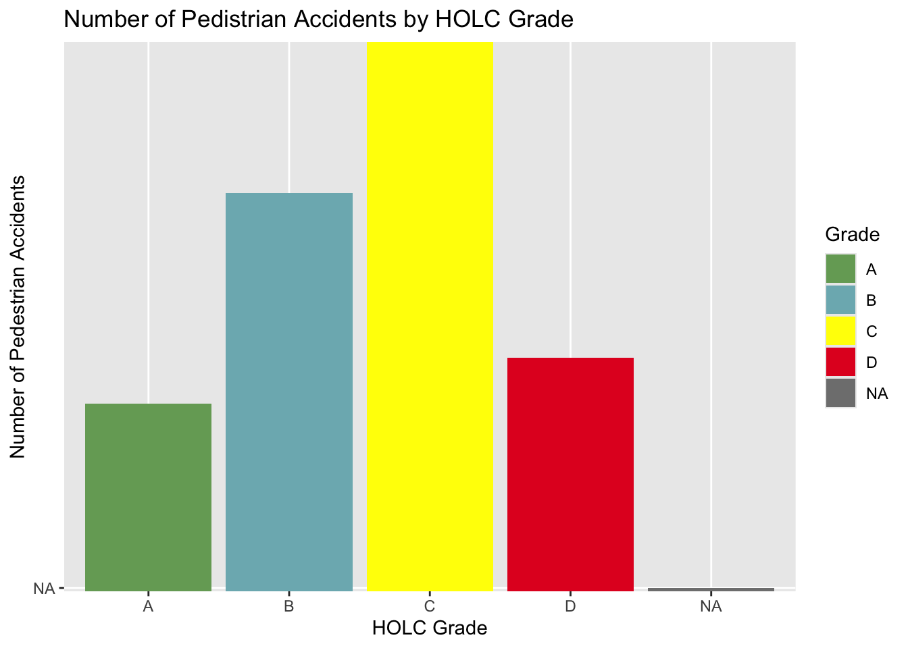

Effects of Historical Redlining Across Los Angeles County
Author
Elyse Owen
Published
October 24, 2026
From the map titled ‘Los Angeles County by Historical Redlining Neighbourhoods’, various geographic trends in where historically redlined zones. There are very few redlined zones towards the northern, and especially northeastern areas, while there more redlined zones to the central and southern areas of the county. Additionally, in only a few instances do Grade A (green) neighbourhoods border Grade D (red) neighbourhoods; typically Grade A neighbourhoods border Grade B (blue) neighbourhoods, while Grade D neighbourhoods border Grade C (yellow) neighbourhoods. Grade A neighbourhoods also appear to typically slightly smaller geographically, while Grade D neighbourhoods appear to have more geographical variance.
In the chart ‘Percent of Low Income Residents by HOLC Grade’, it is shown that the lowest percentage of low-income residents are in Grade A, while the highest percentage is within Grade D. From this, the historical legacy of redlined zones by the Home Owners’ Loan Corporation (HOLC) becomes more explicit - the neighbourhoods that were considered less desirable for investment and less safe in the 1930s continue to be disadvantage and have higher levels of poverty. This trend continues in the chart ‘PM2.5 Levels by HOLC Grade’, with Grade A neighbhourhoods having the lowest levels of PM2.5, and Grade D neighbourhoods having the highest levels of PM2.5. However, the variance across the neighbourhood grades is much less significant than what can be seen with the percentage of low income residents; a contributing factor toward this is likely the overall poor air quality within Los Angeles county.
A change in the trends focusing on Grade A and Grade D occurs when looking at the number of pedestrian accidents by HOLC grade, with Grade C having the highest amount of accidents, followed by Grade B. Grade A still has the lowest amount of pedestrian accidents, however, Grade D has the secondest fewest number of accidents. A similiar trend is reflected when looking at the number of bicycle accidents across the HOLC grades. Without further data, it is not possible to full explain the differences, however, some contributing factors could include the types and sizes of roads within each neighbourhood grade, as well as the accessibility of bike paths and sidewalks. An additonal consideration would be to look at the amount of residents within each neighbourhood grade who are walking or cycling places, as this may also contribute to the variances across the neighbourhoods.
Load libaries sf, tmap, tidyverse, spData
library(sf)
Linking to GEOS 3.13.0, GDAL 3.8.5, PROJ 9.5.1; sf_use_s2() is TRUE
library(tmap)
Registered S3 method overwritten by 'stars':
method from
st_interpolate_aw.stars sf
── Conflicts ────────────────────────────────────────── tidyverse_conflicts() ──
✖ dplyr::filter() masks stats::filter()
✖ dplyr::lag() masks stats::lag()
ℹ Use the conflicted package (<http://conflicted.r-lib.org/>) to force all conflicts to become errors
library(stars)
Loading required package: abind
library(here)
here() starts at /Users/elyseowen/Desktop/School/UCSB/MEDS/eds223/EDS223-HW2
library(gt)
Attaching package: 'gt'
The following object is masked from 'package:tmap':
metro
Reading layer `mapping-inequality-los-angeles' from data source
`/Users/elyseowen/Desktop/School/UCSB/MEDS/eds223/EDS223-HW2/data/mapping-inequality/mapping-inequality-los-angeles.json'
using driver `GeoJSON'
Simple feature collection with 417 features and 14 fields
Geometry type: MULTIPOLYGON
Dimension: XY
Bounding box: xmin: -118.6104 ymin: 33.70563 xmax: -117.7028 ymax: 34.30388
Geodetic CRS: WGS 84
crashes <-read_csv('data/SWITRS_LA/Crashes.csv')
Rows: 251100 Columns: 80
── Column specification ────────────────────────────────────────────────────────
Delimiter: ","
chr (45): COLLISION_TIME, OFFICER_ID, REPORTING_DISTRICT, CHP_BEAT_TYPE, CI...
dbl (33): CASE_ID, ACCIDENT_YEAR, JURIS, DAY_OF_WEEK, CHP_SHIFT, POPULATION...
date (2): PROC_DATE, COLLISION_DATE
ℹ Use `spec()` to retrieve the full column specification for this data.
ℹ Specify the column types or set `show_col_types = FALSE` to quiet this message.
Filter to Los Angeles County
california <- ej_screen %>% dplyr::filter(ST_ABBREV =="CA")los_angeles<- california %>% dplyr::filter(CNTY_NAME %in%c("Los Angeles County"))
Match the CRS
st_crs(los_angeles)
Coordinate Reference System:
User input: WGS 84 / Pseudo-Mercator
wkt:
PROJCRS["WGS 84 / Pseudo-Mercator",
BASEGEOGCRS["WGS 84",
ENSEMBLE["World Geodetic System 1984 ensemble",
MEMBER["World Geodetic System 1984 (Transit)"],
MEMBER["World Geodetic System 1984 (G730)"],
MEMBER["World Geodetic System 1984 (G873)"],
MEMBER["World Geodetic System 1984 (G1150)"],
MEMBER["World Geodetic System 1984 (G1674)"],
MEMBER["World Geodetic System 1984 (G1762)"],
MEMBER["World Geodetic System 1984 (G2139)"],
MEMBER["World Geodetic System 1984 (G2296)"],
ELLIPSOID["WGS 84",6378137,298.257223563,
LENGTHUNIT["metre",1]],
ENSEMBLEACCURACY[2.0]],
PRIMEM["Greenwich",0,
ANGLEUNIT["degree",0.0174532925199433]],
ID["EPSG",4326]],
CONVERSION["Popular Visualisation Pseudo-Mercator",
METHOD["Popular Visualisation Pseudo Mercator",
ID["EPSG",1024]],
PARAMETER["Latitude of natural origin",0,
ANGLEUNIT["degree",0.0174532925199433],
ID["EPSG",8801]],
PARAMETER["Longitude of natural origin",0,
ANGLEUNIT["degree",0.0174532925199433],
ID["EPSG",8802]],
PARAMETER["False easting",0,
LENGTHUNIT["metre",1],
ID["EPSG",8806]],
PARAMETER["False northing",0,
LENGTHUNIT["metre",1],
ID["EPSG",8807]]],
CS[Cartesian,2],
AXIS["easting (X)",east,
ORDER[1],
LENGTHUNIT["metre",1]],
AXIS["northing (Y)",north,
ORDER[2],
LENGTHUNIT["metre",1]],
USAGE[
SCOPE["Web mapping and visualisation."],
AREA["World between 85.06°S and 85.06°N."],
BBOX[-85.06,-180,85.06,180]],
ID["EPSG",3857]]
la_transform <-st_transform(los_angeles, crs =st_crs(inequality))if(st_crs(la_transform) ==st_crs(inequality)){print("it's a match!")} else {print("still not a match")}
[1] "it's a match!"
Join the dataframes, drop the geometry
la_transform <-st_make_valid(la_transform)inequality <-st_make_valid(inequality)la_inequality <-st_join(la_transform, inequality, left =FALSE)la_inequality <-st_drop_geometry(la_inequality)
Visualise percentage of low income population, mean PM2.5 concentrations by HOLC grade
ggplot(data = low_income, aes(fill = grade)) +geom_col(mapping =aes(x = grade, y = low_income_mean))+labs(x ='HOLC Grade', y ='Percent Low Income', title ='Percent of Low Income Residents by HOLC Grade')+scale_fill_manual(values = grade_colors, name ="Grade")

ggplot(data = pm_25, aes(fill = grade)) +geom_col(mapping =aes(x = grade, y = mean_pm_25))+labs(x ='HOLC Grade', y ='PM2.5', title ='PM2.5 Levels by HOLC Grade')+scale_fill_manual(values = grade_colors, name ="Grade")

Match CRS, join SWITRS data to HOLC data, drop geometry
Coordinate Reference System:
User input: EPSG:4326
wkt:
GEOGCRS["WGS 84",
ENSEMBLE["World Geodetic System 1984 ensemble",
MEMBER["World Geodetic System 1984 (Transit)"],
MEMBER["World Geodetic System 1984 (G730)"],
MEMBER["World Geodetic System 1984 (G873)"],
MEMBER["World Geodetic System 1984 (G1150)"],
MEMBER["World Geodetic System 1984 (G1674)"],
MEMBER["World Geodetic System 1984 (G1762)"],
MEMBER["World Geodetic System 1984 (G2139)"],
MEMBER["World Geodetic System 1984 (G2296)"],
ELLIPSOID["WGS 84",6378137,298.257223563,
LENGTHUNIT["metre",1]],
ENSEMBLEACCURACY[2.0]],
PRIMEM["Greenwich",0,
ANGLEUNIT["degree",0.0174532925199433]],
CS[ellipsoidal,2],
AXIS["geodetic latitude (Lat)",north,
ORDER[1],
ANGLEUNIT["degree",0.0174532925199433]],
AXIS["geodetic longitude (Lon)",east,
ORDER[2],
ANGLEUNIT["degree",0.0174532925199433]],
USAGE[
SCOPE["Horizontal component of 3D system."],
AREA["World."],
BBOX[-90,-180,90,180]],
ID["EPSG",4326]]
bike_ped_crashes <- spatial_crashes |>select(PEDESTRIAN_ACCIDENT, BICYCLE_ACCIDENT, POINT_X, POINT_Y)if(st_crs(bike_ped_crashes) ==st_crs(inequality)){print("it's a match!")} else {print("still not a match")}
Warning in st_is_longlat(x): bounding box has potentially an invalid value
range for longlat data
HOLC_bike_peds <-st_drop_geometry(HOLC_bike_peds)
Visualise bicycle, pedestrian accidents by HOLC grade
ggplot(data = HOLC_bike_peds, aes(fill = grade)) +geom_col(mapping =aes(x = grade, y = PEDESTRIAN_ACCIDENT))+labs(x ='HOLC Grade', y ='Number of Pedestrian Accidents', title ='Number of Pedistrian Accidents by HOLC Grade')+scale_fill_manual(values = grade_colors, name ="Grade")

ggplot(data = HOLC_bike_peds, aes(fill = grade)) +geom_col(mapping =aes(x = grade, y = BICYCLE_ACCIDENT))+labs(x ='HOLC Grade', y ='Number of Bicycle Accidents', title ='Number of Bicycle Accidents by HOLC Grade')+scale_fill_manual(values = grade_colors, name ="Grade")